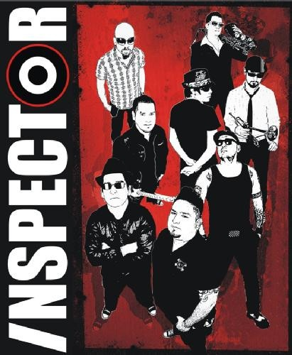

Mis gustos en cuestión de la música son variados, a veces me gusta el rock y otro día ya ando escuchando otro género musical, pero así para resumir, unas de las bandas de electrónica-rock: Daft Punk, una chulada sus canciones; Metallica con su canción más larga de 7 minutos, aster of Puppets; Green Day, de ellos me gustan la que se llama American Idiot y también la de Basket canciones. Y claro, ya por último, del género musical ska, ¡INSPECTOR!, de ellos me gusta la de Un osito dormilón, que esa la canta en dueto con otro grupo del género ska que se llama El Gran Silencio.